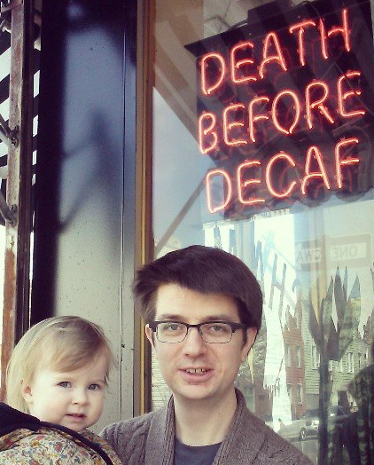

Teaching
- Fall 2015: MAS 439, Commutative Algebra and Algebraic Geometry
- Spring 2016: MAS 341, Graph Theory
Research
I study algebraic geometry and combinatorics, especially when they interact. More specific research interests include Gromov-Witten theory, orbifolds, Hilbert schemes, and partitions.